Nyzo version 526 (commit on GitHub) adds Micropay and prefilled-data commands to the client.
This version does not affect the verifier or sentinel. It only affects the client.
In the client loop, canceled is checked before validation. Previously, validation output would display once after a command was canceled. This did not cause any problems, but it was incorrect behavior. Also, reloading of preferences has been added before validation. The Micropay-send command requires some preferences to be set, and a restart to reload those preferences would be tedious.
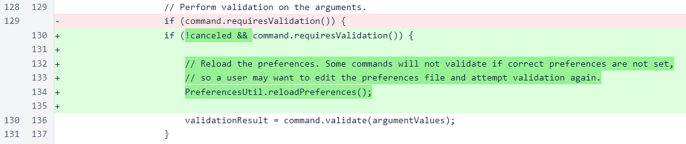The ClientTransactionUtil class has been added to allow multiple commands to share a process for creating and sending transactions. The core of this class is the code that was used to create and send transactions in TransactionSendCommand.
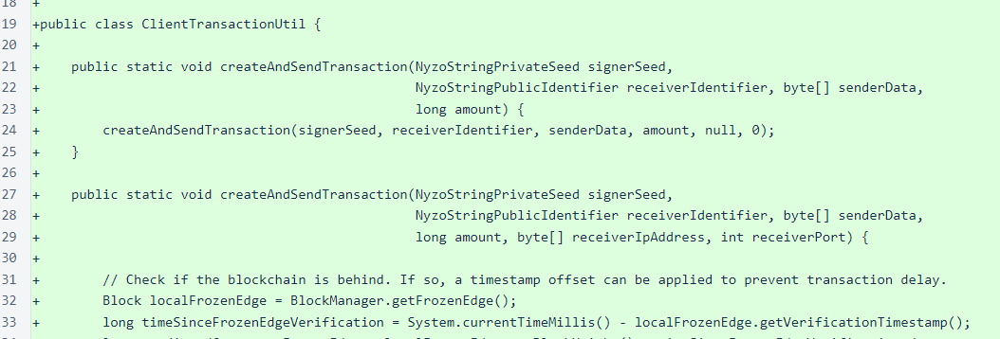If an IP address and port are supplied, the transaction is sent just to that receiver. The MicropaySendCommand uses this single-receiver method. Otherwise, the transaction is sent to the cycle. The TransactionSendCommand and PrefilledDataSendCommand use the cycle-send method.
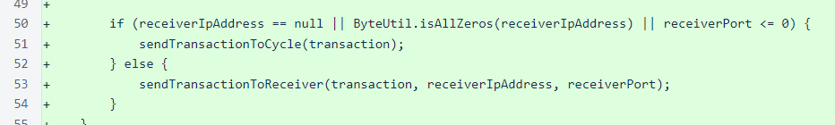This class also provides a method for creating a string to display sender data. This is the same method that has been used on the Nyzo web server. If the sender data represents a UTF-8 string that encodes back to the original sender-data bytes, then the data is interpreted as a UTF-8 encoded string. Otherwise, the bytes of the sender data are displayed in hexadecimal format.
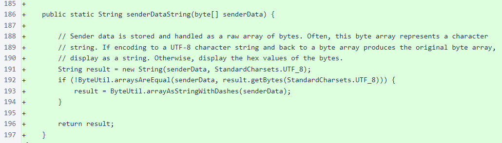A static method for building a ValidationResult instance has been added to the ValidationResult class. This method is used whenever an unexpected exception is thrown when performing command validation. Previously, a ValidationResult with a null argument list was returned in such a case, but this was causing another exception in the client loop and resulting in the display of a rather unhelpful error message.
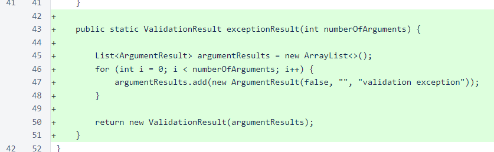MicropayCreateCommand builds a Micropay string. A Micropay string bundles receiver ID, sender data, amount, receiver IP, and receiver port. The receiver IP and receiver port allow the client to send the transaction directly to the receiver. For small transactions, such as payment for viewing newspaper articles, a small amount of loss due to verifier issues is acceptable. This will allow receivers to immediately verify and approve transactions based on the latest available balance list, and then the receivers will have the responsibility of forwarding the transaction to the cycle to try to have the transaction incorporated into the blockchain.
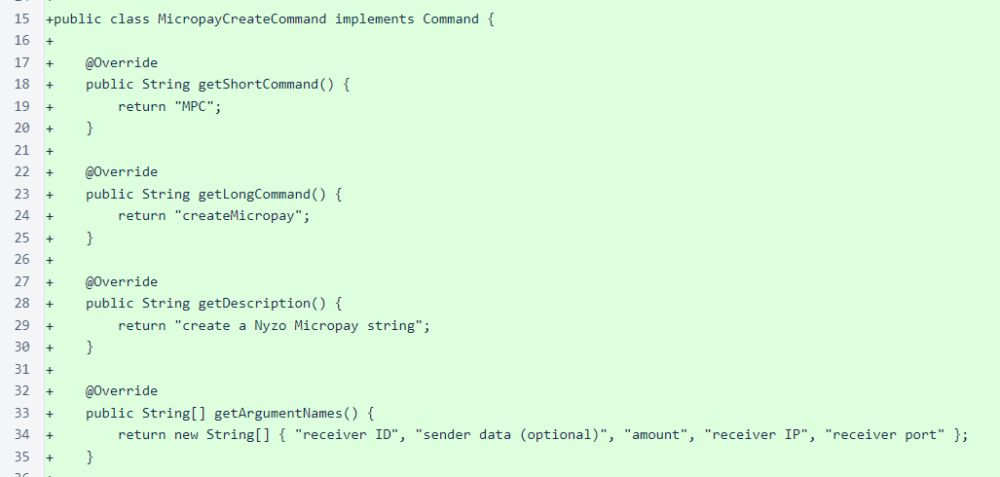PrefilledDataCreateCommand builds a prefilled-data string. This is simply a receiver ID and sender data bundled into a single Nyzo string. This string was created to address any situation where a receiver relies on sender data to process incoming transactions. The receiver can create a prefilled-data string with the appropriate sender data, give that prefilled-data string to the sender, and be assured that the sender attaches the appropriate data to a transaction.
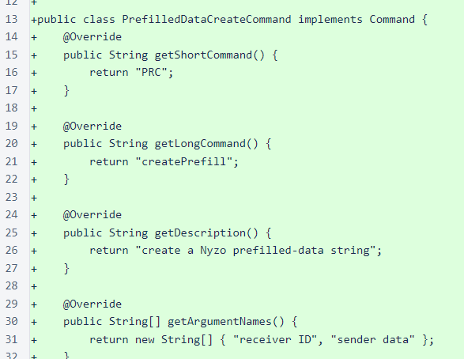PrefilledDataSendCommand works just like TransactionSendCommand. However, instead of accepting a receiver ID and sender data, it accepts a prefilled-data string.
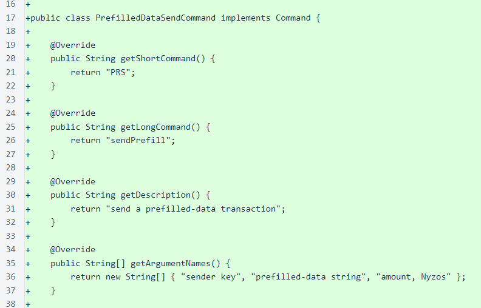TransactionSendCommand has some minor changes to improve user experience.
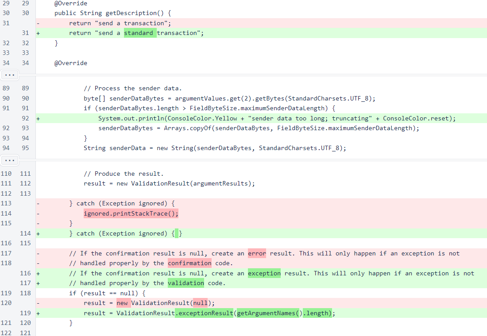The functionality of TransactionSendCommand has been moved to ClientTransactionUtil.

The encoding table has been updated to use only "unreserved" characters as defined in RFC 3986, section 2.3. The upcoming Micropay system will eventually allow signed transactions to be sent to web servers in URL query strings, so these strings should be as URL-friendly as possible.
For compatibility with older Nyzo strings, characters from the old encoding are mapped to their new characters. Also, the two alphabetic characters that are omitted from the encoding table are mapped to their look-alike numerals in the table.
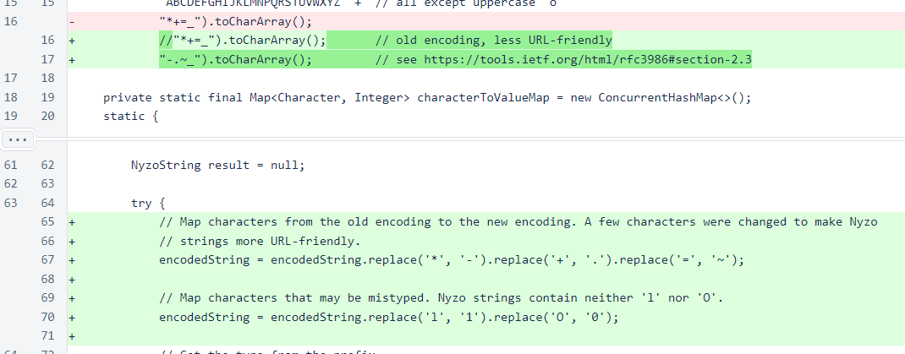The receiver port has been added to NyzoStringMicropay. This is not backward-compatible with older Micropay strings, but this is not a concern, as these strings are not yet widely used.
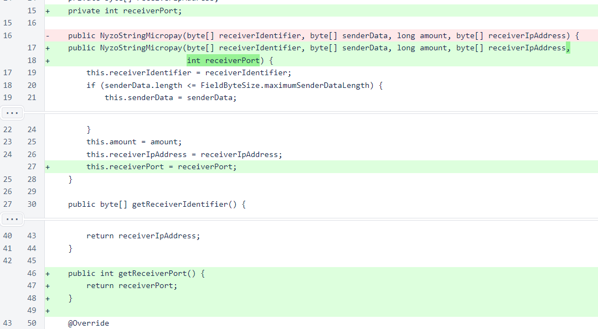NyzoStringTest has been updated to test prefilled-data strings and to include the receiver port in Micropay strings.
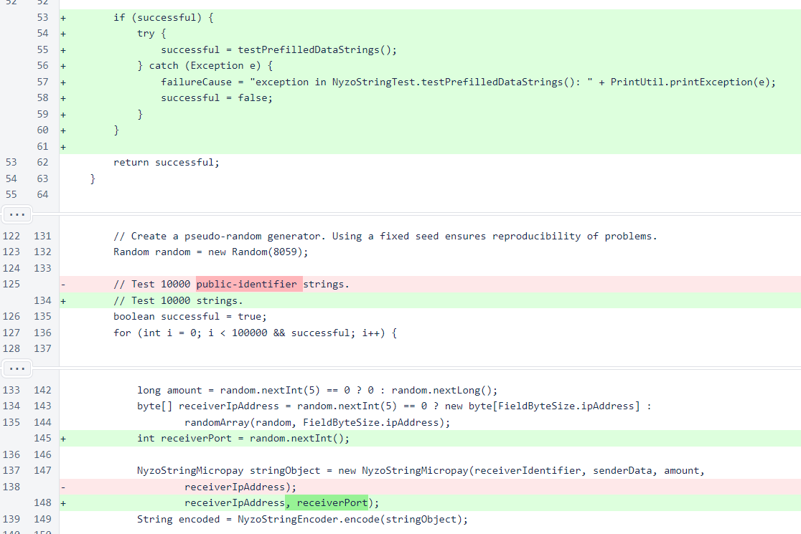PreferencesUtil was modified to allow the "=" character in values. This is no longer necessary functionality, as this character was removed from the Nyzo string encoding table, but the change was allowed to remain because it is more sensible than the previous behavior.
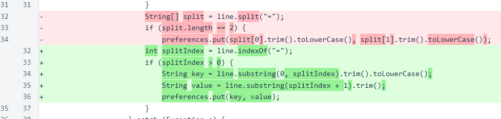Reloading of preferences is now allowed. The client uses this functionality to ease configuration of commands that use preferences. Also, a method has been added for getting a double value from preferences. This is currently used to retrieve the maximum Micropay amount.
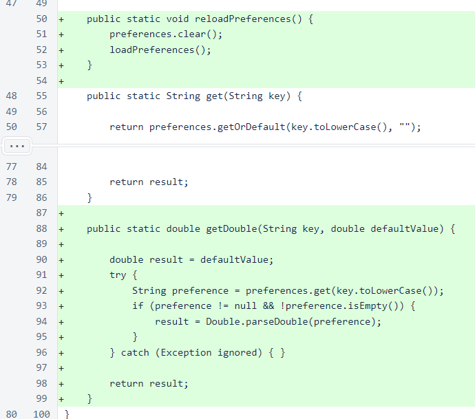